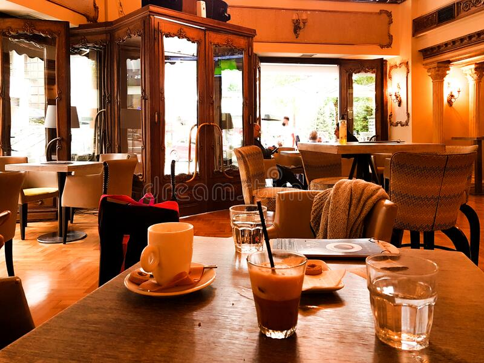
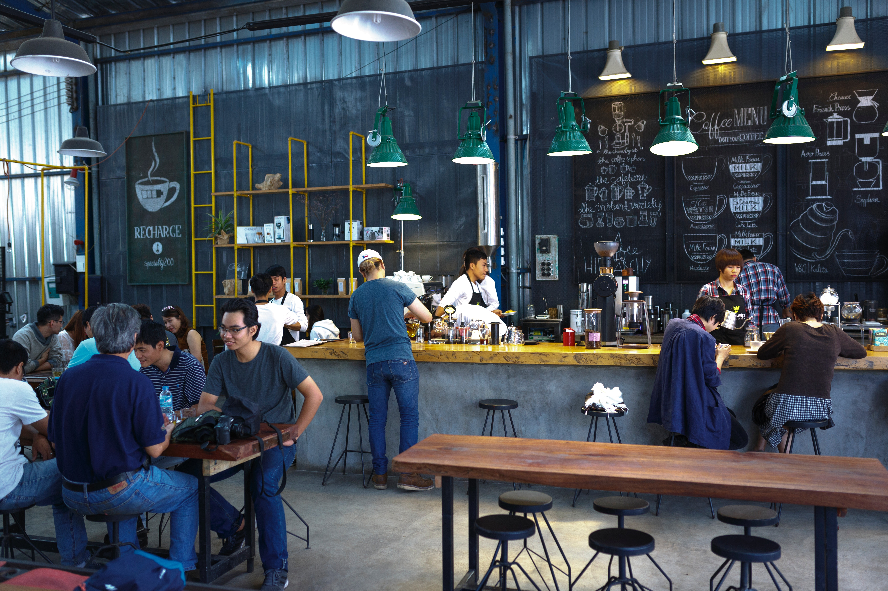
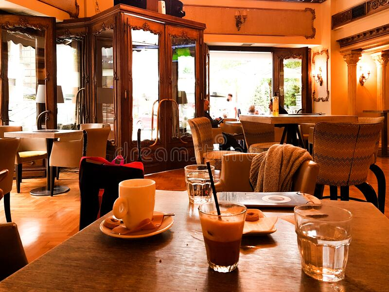
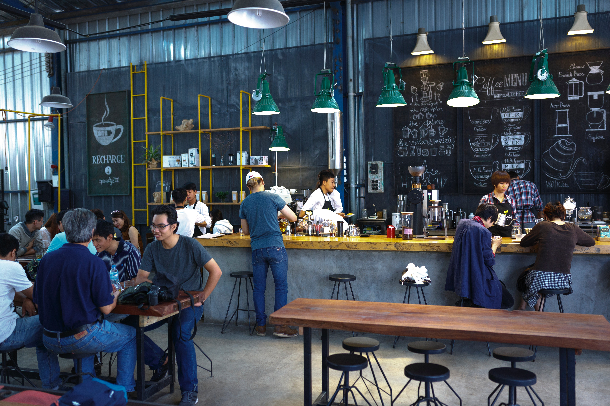
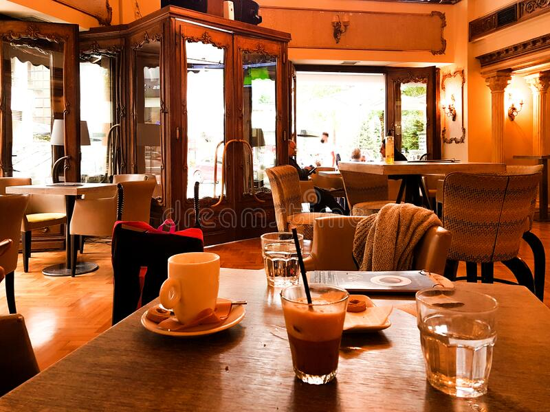
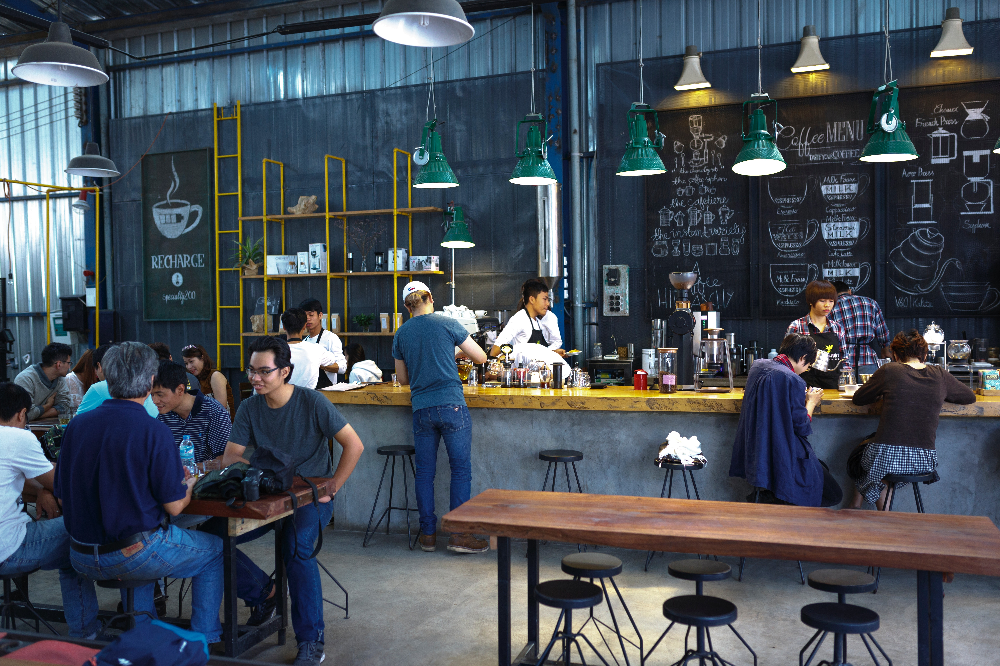
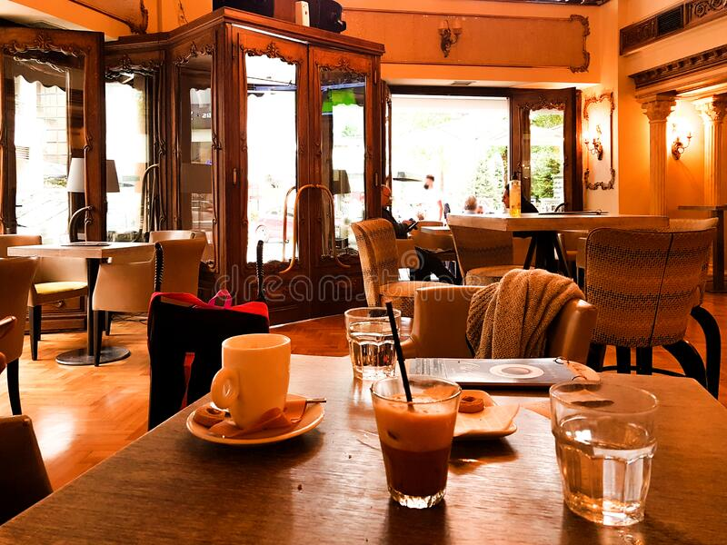
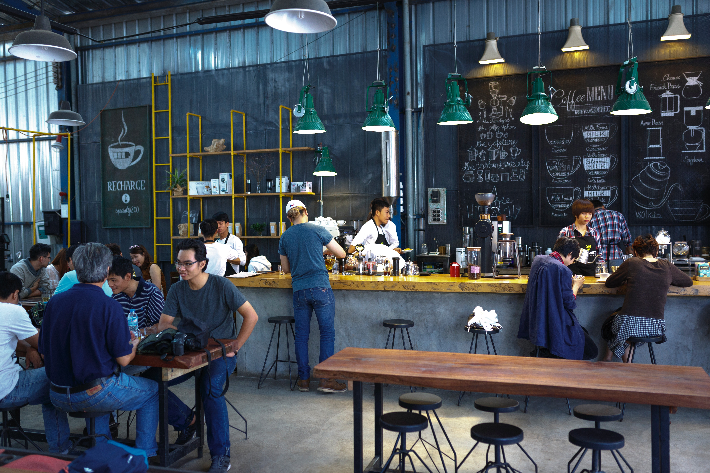

To achieve high levels of customer satisfaction, Coffee Palace has prioritized customer service and meet expectations. This includes delivering high-quality coffee and food or services, responding promptly to customer inquiries or complaints, and maintaining open and transparent communication channels.
READ MORE...Fried rice is a dish made from cooked rice stir-fried with various ingredients such as vegetables, meat, and egg. A customer favourite on the manu right now!
READ MORE...Our Happy Hour runs every Saturday from 3 o'clock to 8 o'clock. A popular time of day when our customers can enjoy discounted drinks and meals. It is a great opportunity for customers to unwind after a long week of work or catch up with friends in a fun and relaxed atmosphere.
READ MORE..."I recently visited Coffee Palace in Kabarak and had an incredible experience. From the moment I walked in, I was greeted warmly by the staff and shown to my table promptly. I ordered the Fried rice and it was cooked to perfection." -prof. Daisy
READ MORE...